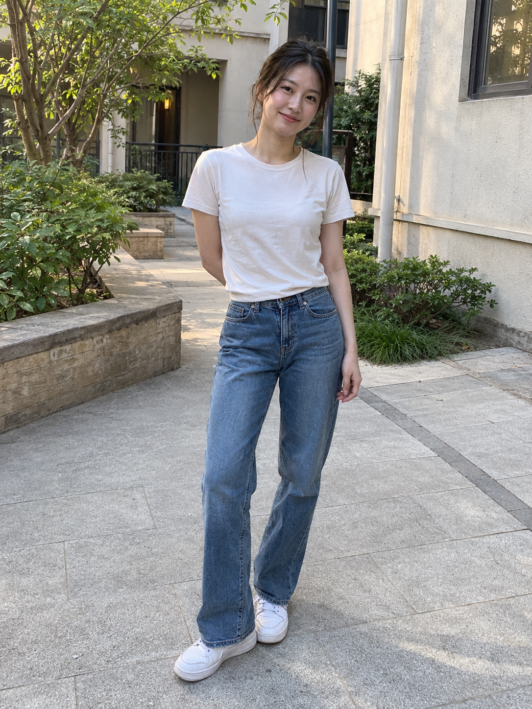

SOURCE 01 / POSE-DB-01
姿势库：把动作与构图说清楚。
1,439 张无脸人偶姿势 PNG，288 组；可检索类别，并比较正面、俯视、仰视、侧面与斜侧等已有视角。
- 能力与作用
- 给外部 AI 或创作者提供身体动作、重心和观看方向的可见参考。
- 已取得资源
- 原尺寸图片与索引已本地保存并有私有备份；五视角浏览、收藏和方案编排在本地版提供。
原始参考图库 / 本地创作工作台
姿势参考表达动作，衣装参考表达穿搭目标。
由外部模型组合人物与场景，
我们用实际小样探索怎样形成一套作品。
原库资源与模型能力分别说明 · 实测结果与产品设想分别标注
资料状态 姿势 1,439 张与衣装 1,407 套原图均已核对，分别保存在本地与私有远端。
公开版展示引导图、研究与生成小样；原图浏览和素材记忆版在本地私有入口提供。
SOURCE 01 / POSE-DB-01
1,439 张无脸人偶姿势 PNG，288 组；可检索类别，并比较正面、俯视、仰视、侧面与斜侧等已有视角。
SOURCE 02 / COSTUME-DB-01
已找到原作者的完整衣装站：1,407 套虚构衣装，按四季、派对、泳装等八类浏览，可搜索、预览和取得单张原尺寸 PNG。
两者提供参考素材。生图、人物身份与衣装细节保持由外部模型完成；系列创作还需要镜头计划、选片与返修。视频、连续动作与可编辑 3D 需额外工具及验证。
01 / LOCAL POSE LIBRARY
正在读取本地原图库…
图片来自已保存的 POSE-DB-01 原图。中文分类、部分动作译名、专题与产品说明由我们整理，原始日文名称与出处保留。浏览全部分区可访问 288 组；缺少的原站视角会明确标记。
ORIGINAL POSE LIBRARY / ACTUAL IMAGE PILOT
默认展示亚洲女性手机随拍版。
原图、人物基准与结果都可放大对照。
这一轮的观察：三种主要动作可辨，人物特征与服装主色目测延续；关节、手指、衣料和鞋形等细节仍有变化。
本轮人物与图片均由 AI 生成。手机随拍观感不代表真实拍摄，也未测试具体真人的身份还原。
FROM MATERIAL TO PRODUCT
下面三个方向共用本地方案板。
已新增三姿势生成小样，稳定性和产品价值仍待验证。
产品价值需要实际使用验证：比较找图耗时、沟通轮次、返修和复用，而非按图片数量定价。素材的原始用途限制仍适用；真人换装/婚纱方向需另用适当授权的素材。
CREATIVE BRIEF / LOCAL PROTOTYPE
保存姿势、视角、顺序和用途。
草稿留在本机浏览器，可导出恢复。
方案只保存引用与备注，不包含原图，不调用生成模型。原图可在详情里按需另存，原始素材许可不因导出而改变。
RESEARCH MAP / ONE IMAGE
把原库、现有工作台、实测小样与未来产品放在同一张图里，区分资源状态与验证进度。
公开引导图沿用素材回忆版的版式与我们的探索效果。姿势和衣装图形使用原创示意，精确原图请从原站或本地私有入口查看；产品方向仍需实际使用验证。
回看图中的原始资料与探索结果
2026-10-30 更新：已找到完整衣装站并保存 1,407 套原图，新增同一人物的九格衣装与姿势组合实测。上方引导图保留 10 月 29 日的研究版本；衣装“预告”状态以当前说明为准。查看最新实测 →
02 / FROM POSES TO A PHOTO SERIES
当前实例：庭院午后 · 六张写真候选
延续亚洲女性与手机随拍观感
原库能参与动作表达，镜头清单能组织景别和顺序。全身、半身、坐姿与侧身已有可见候选。
开场与结尾仍偏近；面部、衣纹、手指和背景几何存在变化。姿势图也不能标定真实机位。
新增三次生成，复用三张已有结果。各张从同一人物基准出发。查看完整指令与输入关联 ↗ · 回到三姿势实验 →
PRODUCT DIRECTIONS / WHAT TO DELIVER
点击方向查看交付物、能力缺口和验证任务。
已有六张写真系列与九张衣装组合候选，查看组合实测 →。
当前原库有实际人物用途限制。换装、婚纱、职业照涉及真实客户时，需要更换为适当授权的姿势和人物参考。现有白 T 恤样例尚未验证指定服装商品、实际合身度或真人身份还原。
这份网页已实现保存结果展示、参考对照、选片、备注与任务导出。生成在外部工具中完成；网页尚未接入实时生图、视频或 3D。后续价值要用制作时间、返修和实际使用来验证。
03 / PERSON + COSTUME + POSE
2026-10-30 · 已保存的九张候选
衣装与姿势来自两个参考库，生成由外部模型完成。

每张都独立输入同一人物基准、一张衣装原图和一张姿势原图，固定庭院与手机随拍风格。横向看同一套衣服的动作变化，纵向看同一动作的三套造型。
本轮只比较主服装和鞋子，帽子、包与首饰统一不带。这里没有实时生图接口。虚构人物、主服装配色、轮廓与三种动作大体延续，可作为穿搭比较、角色造型和 Lookbook 初稿。
针织纹理、袖口、裤缝、手指、侧身角度和背景仍会重绘。未测试真实商品、真实人物身份、合身或视频连续性。
先选造型和动作，再补远近景、表情与细节，修整候选并组织观看顺序。九格本身是组合条件对照。
内置 ImageGen 共 10 次请求、9 张输出。原计划短裙坐姿组合被平台拒绝一次，无保存图；第三列对三套服装统一改为侧身回望。各配置只生成一次，不能推算稳定成功率。
参考图保留原作者使用限制；公开页展示新生成作品与输入出处，原库图片留在原站及私有备份。本地有权限的素材目录可在同一窗口对照原图。真实人物与未成年人用途另受原站限制。
04 / ORIGINAL LIBRARIES
主线只讨论原始素材、作者演示、实际能力与价值。
原库的六张写真探索在“系列创作”，早期通用婚纱实验保留在独立分支。
SAVED RESOURCES / 2026.10.29
用于溯源、核对条款与查看原始素材。
已经下载的原图和索引，供本人使用。
保留完整备份与恢复依据，需要访问权限。
公开版展示研究总览与已保存小样，本地版另提供原图浏览、收藏与参考方案。
本地服务从已保存的私人目录只读提供原图，素材不会复制进公开 app 目录。原站与私有备份入口继续保留作为出处与资源关联。
01 / 姿势图库
日文原站提供无脸灰色人偶线稿、多角度姿势参考 PNG。
最初中文帖是转述。中文 GitHub 镜像主要增加汉化、命名和检索；原图与代码的授权需要分开看。
02 / COSTUME-DB-01 衣装图库
完整站点、衣装原图与造型条件。
2026-10-30 找到完整入口，原图及对应缩略图已在独立私有库保存。它们是 AI 生成的虚构衣装，不是真实商品照片。
AUTHOR'S DEMONSTRATION
下图解释原帖中各张参考的作用。
原帖效果请通过作者入口查看，未用我们的样例替代。
用人物图表达身份，用原库图片表达服装或姿势目标，再由外部 AI 重新生成画面。素材是否有帮助、能控制到什么程度，需要用原库做对照验证。
CAPABILITY BOUNDARY
把难以用文字讲清的目标变成可见图片。姿势站能筛选已有角度；不会从一张图连续旋转到任意机位。
帮助更快找到合适素材。汉化和分类不会自动增加原始动作，也不增加图像模型的能力。
身份保持、姿势跟随、服装细节和出图稳定性，取决于模型、输入和流程。图库本身不承诺这些结果。
相关开源工具有不同输入输出，应单独研究。不能把它们的编辑和导出能力归到这两个图库上。
查看相关能力对照 →VALUE TO INVESTIGATE
分类、中文名称和集中浏览，是否能减少寻找合适姿势的时间？
有检索入口；节省时间的幅度尚未测量。面对复杂手臂、重心或机位，用参考图是否比反复写提示词更清楚？
这是用途假设；需原库图片与文字条件做对照。同一组姿势的不同视角，对绘画、构图沟通和生图参考各有什么作用？
多角度素材存在；不等于获得可编辑 3D。适合某种创作的素材组合，能否连同来源、条件和偏差记录下来？
要先确认具体用途与素材许可。LOCAL DATA EXPLORATION
依据本地原始索引与逐文件清单分析。
下述是原始索引盘点；生成结果与偏差另见“系列创作”。
PRACTICAL EXTENSION RESEARCH
区分“数据基础已具备”“官方路线可参考”
和“实际效果尚未验证”。
先把已保存资料变成可用的私人工作资料，再用原库做对照评测。如果原站和现成镜像已经足够，就没有必要只为换一个界面重做图库。新价值需要来自查找、项目记录、复用或进入创作工具的实际改善。
本次新增的是本地数据盘点、官方资料核对和可执行的验证方案。本地图册已具备本地原型，并新增原库三姿势生成小样；纯文字对照、稳定性和其他工具效果仍待实测。
查看资源盘点与扩展研究 JSON ↗EVIDENCE STATUS
原站允许符合条款的免费创作参考与商业作品，但禁止图片数据再分发、转载、转售，另有真人与未成年人用途限制。中文镜像 MIT 仅覆盖代码，素材不随之开放；服装图库授权仍未确认。
查看原始条款、出处与私有备份 →已有的原创婚纱样例、输入输出对照、换装与摄影方向完整保留。它们说明通用参考生图和产品假设，不作为原库效果证明。
05 / RELATED CAPABILITIES
前 3 项是原库与镜像，其余是相关能力研究。
编辑器、视频或 3D 工具的能力不归属于原图库。
“文档已读”表示核对了官方说明或代码，不代表已本机复现。历史有限实验单独列出，不扩大为完整兼容性承诺。查看有限导出实验记录 ↗
新增衣装私有库：1,407 张原图与 1,407 张缩略图已完整核对，九格实验及全部输入另存于该库。衣装私有库 ↗ · 八类素材目录 ↗。下方原图备份统计仍指姿势库。
06 / SOURCES & PRESERVATION
原图在私有备份；研究页保留索引与关联。
代码、素材和模型的许可分别核对。
姿势站允许免费创作参考和符合条款的商业作品，禁止原图及加工后图片数据的再分发、转载、转售；另有限制真人与未成年人用途的条款。中文镜像的 MIT 只覆盖代码。服装库完整下载与商用许可尚未确认。私有备份仅用于本人回查，不作为公开素材镜像。
PRIMARY SOURCES
PINNED DOCUMENTATION